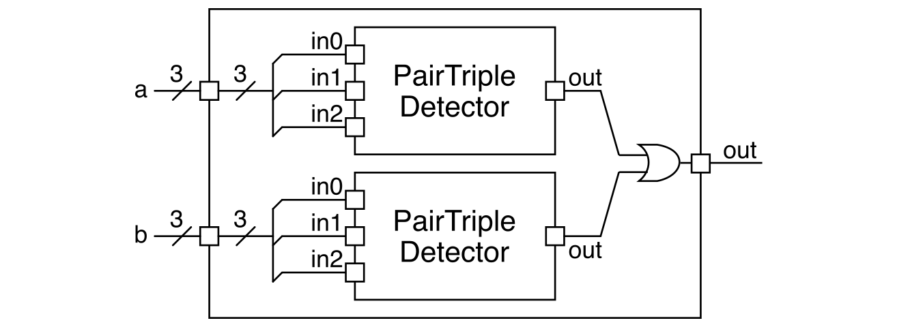

Section 3: Verilog Testing
In this discussion section you will learn how to automate the process of linting your designs, building test simulators for your designs, and testing the functionality of your design with these test simulators.
1. Logging Into ecelinux with VS Code
Follow the same process as previous discussion sections. Find a free workstation and log into the workstation using your NetID and standard NetID password. Then complete the following steps (described in more detail in the last discussion section):
- Start VS Code
- Install the Remote-SSH, Verilog, and Surfer extensions
- Use View > Command Palette to execute Remote-SSH: Connect Current Window to Host...
- Enter
netid@ecelinux.ece.cornell.edu - Install the Verilog and Surfer extensions on the server
- Use View > Explorer to open your home directory on
ecelinux - Use View > Terminal to open a terminal on
ecelinux
There is no need to fork the repo for today's discussion section. Simple clone the repo as follows.
% source setup-ece2300.sh
% mkdir -p ${HOME}/ece2300
% cd ${HOME}/ece2300
% git clone git@github.com:cornell-ece2300/ece2300-sec03-verilog-testing sec03
% cd sec03
% tree
The repo includes the following files:
Makefile.in: Makefile for the build systemconfigure: Configure script for the build systemconfigure.ac: Used to generate the configure scriptscripts: Scripts used by the build systemhw/PairTripleDetector_GL.v: Verilog for pair/triple detectorhw/PairTripleDetector2_GL.v: Verilog for two pair/triple detectorstest/ece2300-test.v: ECE 2300 unit testing librarytest/PairTripleDetector_GL-test.v: test cases for pair/triple detectortest/PairTripleDetector2_GL-test.v: test cases for two pair/triple detectorsim/detector2-sim.v: interactive simulator for hardware module
To make it easier to cut-and-paste commands from this handout onto the
command line, you can tell Bash to ignore the % character using the
following command:
Now you can cut-and-paste a sequence of commands from this tutorial
document and Bash will not get confused by the % character which begins
each line.
2. A Simple Makefile
We will start by writing a very simple Makefile to automate our work from the last discussion section. Let's copy some files into a temporary directory to enable us to explore a simple makefile.
% cd ${HOME}/ece2300/sec03
% mkdir -p temp
% cp hw/PairTripleDetector_GL.v temp
% cp test/ece2300-test.v temp
% cp test/PairTripleDetector_GL-test.v temp
Now let's remind ourselves how to lint, build, and run a test simulator for the pair/triple detector from the last discussion section.
% cd ${HOME}/ece2300/sec03/temp
% verilator -Wall --lint-only PairTripleDetector_GL.v
% iverilog -Wall -g2012 -o PairTripleDetector_GL-test PairTripleDetector_GL-test.v
% ./PairTripleDetector_GL-test
Let's now remove the test simulator so we are back to a clean directory.
Manually performing these steps can be very tedious. We can use a new
tool called make which was specifically designed to help automate the
process of running a sequence of programs. The key to using make is
developing a Makefile. A Makefile is a plain text file which contains
a list of rules which together specify how to execute commands to
accomplish some task. Each rule has the following syntax:
A rule specifies how to generate the target file using the list of
prerequisite files and the given Linux command. make is smart enough to
know it should rerun the command if any of the prerequisites change, and
it also knows that if one of the prerequisites does not exist then it
needs to look for some other rule to generate that prerequisite first. It
is very important to note that make requires commands in a rule to start
with a real TAB character. So you should not type the letters <TAB>,
but you should instead press the TAB key and verify that it has
inserted a real TAB character (i.e., if you move the left/right arrows
the cursor should jump back and forth across the TAB). This is the only
time in the course where you should use a real TAB character as opposed
to spaces.
Let's create a simple Makefile to automate the process of linting an
building a test simulator. Use VS Code to create a new file named
Makefile.
Enter the following content into the Makefile:
PairTripleDetector_GL-test : PairTripleDetector_GL.v PairTripleDetector_GL-test.v
<TAB>verilator -Wall --lint-only PairTripleDetector_GL.v
<TAB>iverilog -Wall -g2012 -o PairTripleDetector_GL-test PairTripleDetector_GL-test.v
clean:
<TAB>rm -rf PairTripleDetector_GL-test
We can use the newly created Makefile like this:
make will by default use the Makefile in the current directory.
make takes a command line argument specifying what you want "make". In
this case, we want to make the PairTripleDetector_GL-test simulator.
make will look at all of the rules in the Makefile to find a rule
that specifies how to make the PairTripleDetector_GL-test simulator. It
will then check to make sure the prerequisites exist and that they are
up-to-date, and then it will run the command sequence specified in the
rule for PairTripleDetector_GL-test. In this case, those commands are
verilator and iverilog. make will output to the terminal every
command it runs, so you should see it output the command line which uses
verilator to lint the design and iverilog to build the
PairTripleDetector_GL-test simulator.
Try running make again:
make detects that the prerequisite (i.e., PairTripleDetector_GL.v and
PairTripleDetector_GL-test.v) have not changed and so it does not
rebuild the test simulator. Now let's try making a change in the
PairTripleDetector_GL.v source file; change the final OR gate to a NOR
gate and rebuild and rerun the test simulator like this:
make will automatically detect that the prerequesite has changed and
rebuild the test simulator appropriately. This ability to automatically
track dependencies and rerun just what is necessary is a key benefit of
using a tool like make. Makefiles can also include targets which are
not actually files. Our example Makefile includes a clean target
which will delete any generated simulators. Let's clean up our directory
like this:
Let's go ahead and remove the temporary directory.
3. Automated Build System
So far we have been doing all of our work in one directory. We will need a better way to organize our work as we start to develop larger and more complicated hardware modules. In the remaining lab assignments, you will be working with four subdirectories:
hw: subdirectory for Verilog hardware design filestest: subdirectory for Verilog test simulator filessim: subdirectory for Verilog interactive simulator filesbuild: subdirectory for building/running all simulators
Take a look in the hw, test, and sim directories in your cloned
repo. You can see the PairTripleDetector_GL.v file is in the hw
subdirectory and the PairTripleDetector_GL-test.v file is in the test
subdirectory.
From now on, we will always be building all of our simulators in a
separate build directory. Keeping simulator executables, trace files,
and waveforms separate from the source code is critical to maintaining a
clean project. It enables us to easily do a "clean build". We can simply
trash the build directory and start from scratch. You should never
commit and push your build directory to GitHub!
We provide you a sophisticated Makefile you will be using in the
remaining lab assignments. The Makefile is generated through a
configuration step that checks to make sure your environment is setup
correctly. Let's go ahead and create a build directory, run configure,
and look at the provided Makefile.
You do not need to understand everything in the Makefile, but just
appreciate that it will be a powerful way to automate the process of
linting, building, and running our simulators.
2.1. Composing Two Pair/Triple Detectors
Let's implement a more complicated Verilog hardware module that composes
two instances of our pair/triple detector called PairTripleDetector2.
It has the following block diagram.

The PairTripleDetector2 has two three-bit input ports and one one-bit
output port; it should output a one if either of the input ports contain
two or three ones and output a zero otherwise. Go ahead and use VS Code
to implement PairTripleDetector2.
2.2. Testing Child Modules
What strategy should we use to test our new composition? The wrong thing
to do is to immediately start testing the composition. Instead, we must
test and thoroughly verify every child module before doing any kind of
integration testing. Let's use the provided Makefile to lint, build,
and run the test simulator for the child pair/triple detector.
You can build and run the test in a single line like this:
The && bash operator enables running multiple commands on the same
command line. Remember you can "zoom-in" to run a single test case with
the +test-case command line option.
% cd ${HOME}/ece2300/sec03/build
% ./PairTripleDetector_GL-test +test-case=1
% ./PairTripleDetector_GL-test +test-case=2
When you zoom-in the test framework will displace a trace of the inputs
and outputs for the design-under-test. You can output waveforms using the
+dump-vcd command line option and then open them using the Surfer
extension for VS Code.
% cd ${HOME}/ece2300/sec03/build
% ./PairTripleDetector_GL-test +test-case=2 +dump-vcd=waves.vcd
% code waves.vcd
2.3. Basic Testing
Now that we know the child modules are correct, we can do integration testing of the composition. Run the basic tests that we provide for this new composition.
% cd ${HOME}/ece2300/sec03/build
% make PairTripleDetector2_GL-test && ./PairTripleDetector2_GL-test
2.4. Directed Testing
In the previous discussion section, we used exhaustive testing to verify
our pair/triple detector. Exhaustive testing is a powerful technique but
only applicable to hardware modules with just a few input ports each with
just a few bits. The number of exhaustive checks scales exponentially
with the number of bits across all input ports. For example, if our
hardware module has four eight-bit input ports, we would need 2^(8*4)
or four billion checks for exhaustive testing!
We can use directed testing in situations where exhaustive testing is
not possible. In directed testing, we focus on including checks for as
many interesting input values as possible. We usually organize directed
testing into many test cases, where each test case is focusing on a
different kinds of input values we are interested in testing. For
PairTripleDetector2, we might want a directed test case that focuses on
input values with a few ones and a different directed test case that
focuses on input values with many ones. Go ahead and add appropriate
checks to test_case_2_few_ones and test_case_3_many_ones in
PairTripleDetector2_GL-test.v.
Then rebuild and rerun the test simulator using make.
% cd ${HOME}/ece2300/sec03/build
% make PairTripleDetector2_GL-test && ./PairTripleDetector2_GL-test
Zoom-in on each of these two test cases to see the trace output.
% cd ${HOME}/ece2300/sec03/build
% ./PairTripleDetector2_GL-test +test-case=2
% ./PairTripleDetector2_GL-test +test-case=3
2.5. Random Testing
Directed testing is a good first step, but how do we know if we have covered all of the corner cases? We can use random testing to help increase our confidence that we have not missed any important corner cases. Random testing involves generating random input values, determing the correct output given these random input values, applying these random input values to the design-under-test, and then verifying that the design-under-test produces the correct output values.
Here is an example of a random test case for our PairTripleDetector2
module:
logic [2:0] random_a;
logic [2:0] random_b;
logic random_out;
int random_a_num_ones;
int random_b_num_ones;
task test_case_4_random();
t.test_case_begin( "test_case_4_random" );
// Generate 20 random input values
for ( int i = 0; i < 20; i = i+1 ) begin
// Generate a 3-bit random value for both a and b
random_a = 3'($urandom(t.seed));
random_b = 3'($urandom(t.seed));
// Calculate the number of ones in random value a
random_a_num_ones = 0;
for ( int j = 0; j < 3; j = j+1 ) begin
if ( random_a[j] )
random_a_num_ones = random_a_num_ones + 1;
end
// Calculate the number of ones in random value b
random_b_num_ones = 0;
for ( int j = 0; j < 3; j = j+1 ) begin
if ( random_b[j] )
random_b_num_ones = random_b_num_ones + 1;
end
// Calculate the correct output value
random_out = (random_a_num_ones > 1) || (random_b_num_ones > 1);
// Apply the random input values and check the output value
check( random_a, random_b, random_out );
end
endtask
Recall that Verilog can be used to both design hardware and also to
test hardware. Very different constructs should be used when designing
vs. testing hardware. Here we are clearly using Verilog constructs (e.g.,
$urandom, for loops, etc) that are not suitable for modeling hardware.
The random test generates two random 3-bit values using the $urandom
system task. We pass in t.seed to ensure our random tests are actually
"pseudo-random", i.e., the test case will always produce the same
sequence of random values. This way if a random test case fails we can
rerun the test case to debug it without worrying that the failure will go
away due to different random input values. We then include Verilog
behavioral code to determine the correct answer; we use two for loops to
count the number of ones in each random 3-bit value. Once we know the
number of ones in each random 3-bit value, we can determine what the
correct output should be for the design-under-test.
Copy and paste this new test case into PairTripleDetector2_GL-test.v.
Then add this new test case to the list of test cases in the initial
block like this:
initial begin
t.test_bench_begin( `__FILE__ );
if ((t.n <= 0) || (t.n == 1)) test_case_1_basic();
if ((t.n <= 0) || (t.n == 2)) test_case_2_few_ones();
if ((t.n <= 0) || (t.n == 3)) test_case_3_many_ones();
if ((t.n <= 0) || (t.n == 4)) test_case_4_random();
t.test_bench_end();
end
Now rebuild and rerun the test simulator. Verify that your new random test case is running.
% cd ${HOME}/ece2300/sec03/build
% make PairTripleDetector2_GL-test && ./PairTripleDetector2_GL-test
% ./PairTripleDetector2_GL-test +test-case=4
It is always useful to try and break your code to make sure your test
cases really are testing what you think they are. Replace the OR gate in
PairTripleDetector2_GL with an AND gate. Do your directed tests catch
this bug? If your directed tests do not catch a bug but your random
tests do catch a bug, then you want to add a new directed test case
that tests for this behavior. In fact, adding a new directed test case to
reproduce a bug caught during randoming testing is the best way to start
debugging a random test case failure. If the bug was caught by your
random test, but not your directed test cases, go ahead and add a new
directed test case that will catch this bug.
2.6. Running All Tests
The provided Makefile provides a check target which will build and
run all test simulators in a single step.
Note that this should only be used to produce a high-level overview of
which test simulators are passing and which test simulators are failing.
You should not just always type make check. You should "zoom-in" and
build and run a single test simulator for which ever hardware module you
are currently working on. Periodically run make check to get a
high-level overview.
3. Interactive Simulators
Once we have finished testing our hardware design, we can use an
interactive simulator to experiment with the design. The source files for
our interactive simulators will be in the sim subdirectory. Take a look
at the provided detector2-sim.v interactive simulator.
You can build the simple interactive simulator by simply specifying it as a target:
Then you can specify the input values for a and b on the command
line.
% cd ${HOME}/ece2300/sec03/build
% ./detector2-sim +a=000 +b=000
% ./detector2-sim +a=001 +b=000
% ./detector2-sim +a=000 +b=001
% ./detector2-sim +a=111 +b=111
Note that an interactive simulator is not for testing. Using an interactive simulator is neither systematic nor automatic. One should only start experimenting with an interactive simulator once a hardware module has been thoroughly tested using a combination of basic, exhaustive, directed, and/or random testing!